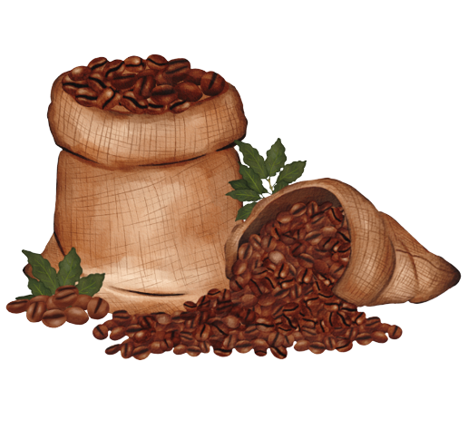
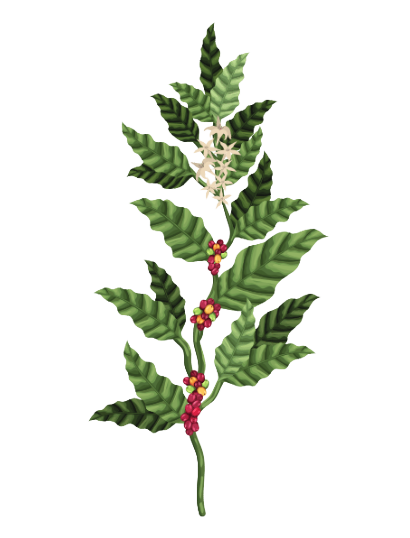
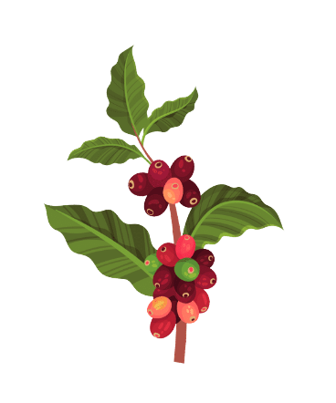
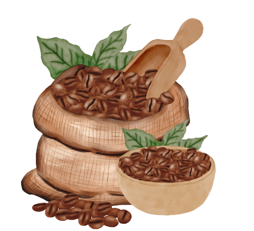
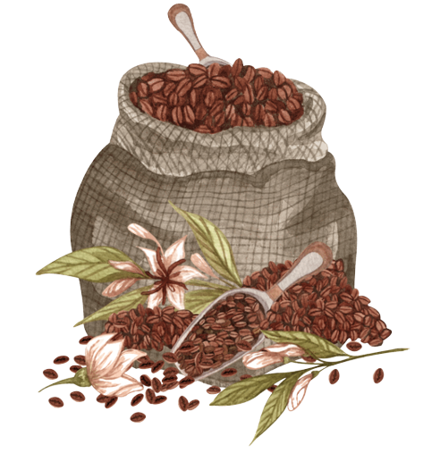

Gerenciamento das Áreas de Produção


Área com maior produtividade da safra:
Maior produtividade da safra



Área com menor produtividade da safra:
Menor produtividade da safra
Gerenciamento das Áreas de Produção
